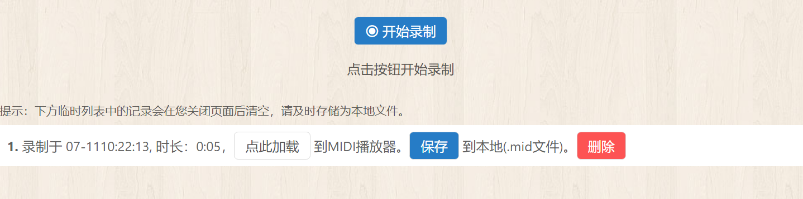
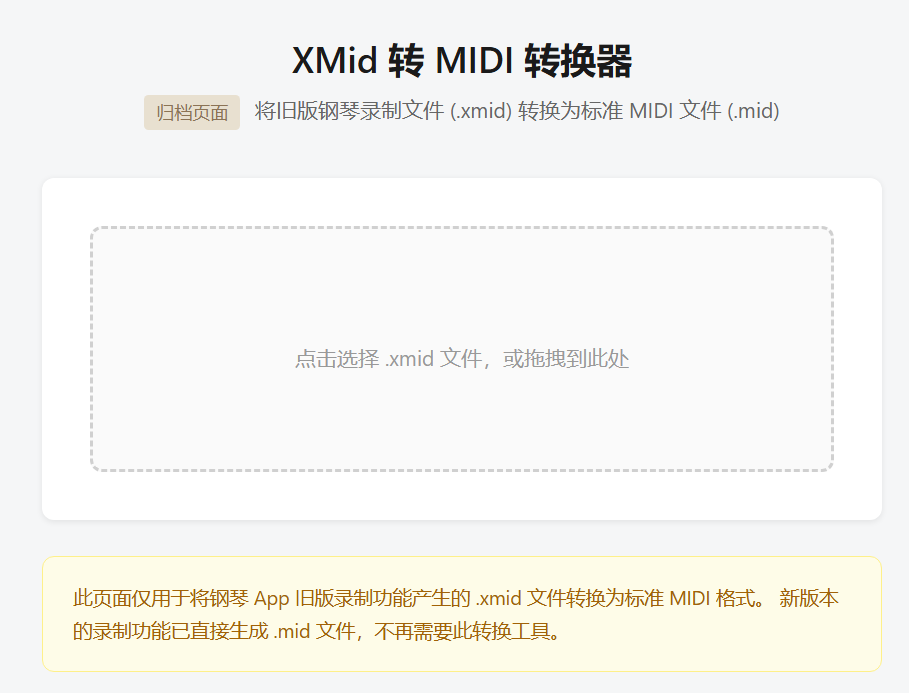

在线钢琴页面-录制功能升级 - mid文件生成修改 - xmid文件转换

发布于
变更说明
钢琴录制功能此前导出的 .xmid 文件是本站自定义格式，无法被其他 MIDI 软件识别和编辑。本次更新后，录制保存的文件将直接输出为标准的 .mid (MIDI) 格式。
具体变更
录制导出改为标准 .mid 格式
- 录制完成后点击「保存」按钮，现在会导出标准的 MIDI 文件（
.mid），而非之前的.xmid文件 - 导出的 MIDI 文件符合 SMF (Standard MIDI File) 格式规范，可在任何支持 MIDI 的软件中打开（如 GarageBand、Cubase、MuseScore 等）
兼容旧版 .xmid 文件
- MIDI 播放面板仍然支持拖入或选择旧版
.xmid文件进行播放 - 提供了一个归档级别的转换页面 /archive/xmid，可将旧版
.xmid文件批量转换为标准.mid格式

技术细节
- MIDI 输出格式：Format 0 (单轨)、480 TPQN (ticks per quarter note)、120 BPM 默认速度
- 录制事件队列中的绝对时间戳（毫秒）按 120 BPM 换算为 MIDI delta time（tick）
- 音符力度（velocity）保留原始录制值
影响范围
- 新录制文件：一切正常，直接获得
.mid文件 - 旧版
.xmid文件：依然可以在 MIDI 播放面板中直接拖入播放，无需转换 - 如需将旧
.xmid转为.mid：直接访问 /archive/xmid 页面
评论
或 匿名发表评论